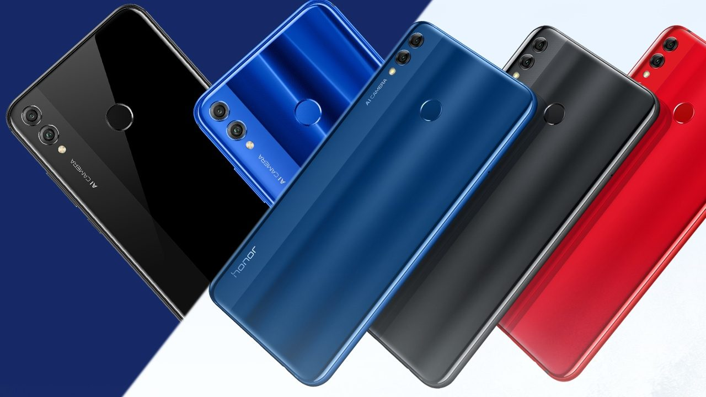

An average smart phone user checks his/her device every six and a half minutes!
-Tim Cook
The most important impact on society and the world is the cell phone. Cell phones have actually been one of the primary drivers in productivity improvements.
-Fabrice Grinda

We take better care of our smartphones than we do of ourselves, the phones are always recharged!
-Arianna Huffington